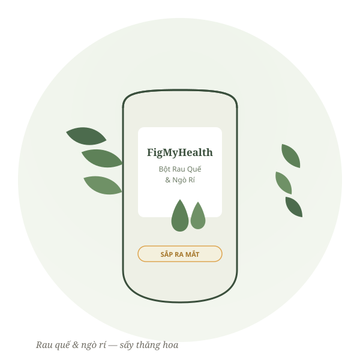
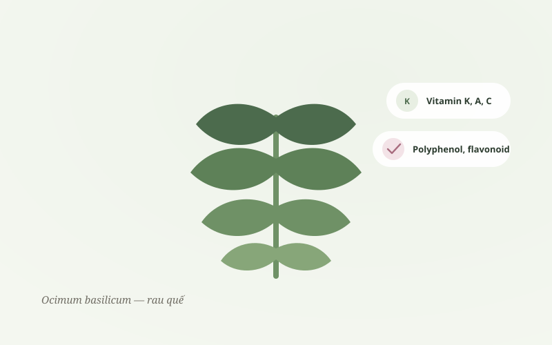
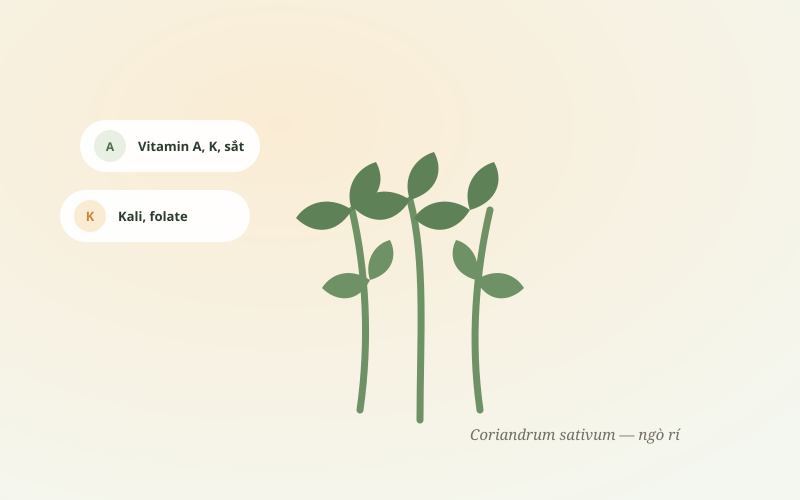

Bột Rau Quế & Ngò Rí Sấy Thăng Hoa Freeze-Dried Thai Basil & Cilantro Powder 冻干泰式罗勒香菜粉
Rau quế và ngò rí là hai loại rau thơm gắn liền với bữa ăn của người Việt — từ tô phở buổi sáng đến đĩa gỏi cuốn ngày hè. Chúng tôi sấy thăng hoa cả hai để giữ lại hương thơm và dưỡng chất vốn có, đóng thành bột mịn tiện mang theo, dùng được quanh năm. Thai basil and cilantro are two herbs woven into everyday Vietnamese cooking — from a morning bowl of phở to a summer plate of fresh spring rolls. We freeze-dry both to preserve their natural aroma and nutrients, milled into a fine powder that's easy to carry and ready year-round. 泰式罗勒与香菜，是越南家常餐桌上再熟悉不过的两味香草——从一碗河粉到夏日生春卷都少不了它们。我们将两者冻干，尽量保留香气与营养，磨成细粉，便于携带，全年可用。
Sản phẩm đang trong giai đoạn hoàn thiện — chưa mở bán chính thức, chưa có giá niêm yết. Để lại thông tin để là người biết đầu tiên khi ra mắt. This product is still in development — not yet for sale, no listed price. Leave your info to be the first to know at launch. 产品仍在筹备中，尚未正式发售、暂无定价。留下联系方式，第一时间获取上市消息。

Hai Loại Rau Thơm Quen ThuộcTwo Familiar Kitchen Herbs两味熟悉的厨房香草

Rau QuếThai Basil泰式罗勒
Ocimum basilicum L.Rau quế (húng quế) là loại rau thơm quen thuộc trong ẩm thực Việt Nam và Đông Nam Á, thường ăn kèm phở, bún, các món cuốn. Theo dữ liệu USDA, 100g rau quế tươi cung cấp lượng vitamin K đáng kể (khoảng 415µg), cùng vitamin A, vitamin C, canxi và sắt. Một nghiên cứu hóa thực vật công bố năm 2024 trên tạp chí Foods cũng ghi nhận rau quế chứa lượng polyphenol và flavonoid đáng kể, có hoạt tính chống oxy hóa khi thử nghiệm trong phòng thí nghiệm (in vitro).[1][2] Thai basil is a staple herb in Vietnamese and Southeast Asian cooking, traditionally served with phở and fresh rolls. According to USDA data, 100g of fresh basil provides a substantial amount of vitamin K (around 415µg), along with vitamin A, vitamin C, calcium and iron. A 2024 phytochemical study in the journal Foods also found meaningful levels of polyphenols and flavonoids, with antioxidant activity observed in laboratory testing.[1][2] 泰式罗勒是越南及东南亚料理中常见的香草，常搭配河粉、春卷食用。根据USDA数据，每100克新鲜罗勒约含415微克维生素K，同时含维生素A、维生素C、钙与铁。2024年发表于期刊Foods的植化素研究也发现罗勒含有一定量多酚与类黄酮，实验室测试显示抗氧化活性。[1][2]

Ngò RíCilantro香菜
Coriandrum sativum L.Ngò rí (rau mùi) là loại rau gia vị phổ biến khắp thế giới — từ Việt Nam, Thái Lan đến Ấn Độ, Trung Đông, Mỹ Latinh. Theo USDA, 100g lá ngò rí tươi chứa khoảng 310µg vitamin K, 515µg vitamin A và 30mg vitamin C, cùng sắt, kali và folate. Một số nghiên cứu in vitro ghi nhận tinh dầu ngò rí có hoạt tính kháng khuẩn và chống oxy hóa.[3][4] Cũng có vài nghiên cứu sơ bộ (chủ yếu trên tế bào/động vật) tìm hiểu khả năng liên kết kim loại của rau mùi, nhưng bằng chứng trên người còn rất hạn chế — đây chỉ là thông tin tham khảo, không phải công dụng của sản phẩm.[5] Cilantro is used worldwide — in Vietnamese, Thai, Indian, Middle Eastern and Latin American cooking alike. USDA data shows 100g of fresh cilantro leaves contains about 310µg vitamin K, 515µg vitamin A and 30mg vitamin C, along with iron, potassium and folate. Some in-vitro studies have noted antimicrobial and antioxidant activity in its essential oil.[3][4] A small number of preliminary studies have also explored cilantro's metal-binding potential, but human evidence remains very limited — shared here for reference only, not as a product benefit.[5] 香菜是全球广泛使用的香草——从越南、泰国到印度、中东、拉丁美洲。根据USDA数据，每100克新鲜香菜叶约含310微克维生素K、515微克维生素A及30毫克维生素C，并含铁、钾与叶酸。部分体外研究指出香菜精油具有抗菌与抗氧化活性。[3][4]另有少数初步研究探讨香菜与金属结合的可能性，但人体证据仍非常有限——此处仅作参考，并非产品功效宣称。[5]
* Sản phẩm đang trong giai đoạn phát triển, chưa phải là thực phẩm bổ sung đã hoàn thiện công bố. Thông tin khoa học trên trang chỉ mang tính tham khảo về nguyên liệu, không phải khẳng định công dụng. * This product is still in development and not yet a finalized supplement. The scientific information here refers to the raw ingredients only, for reference — not a claim of product benefit. * 本产品仍在研发阶段，尚非正式完成申报的膳食补充食品。页面科学信息仅供原料参考，并非产品功效声明。
Vì Sao Đáng Chờ Đợi?Why It's Worth The Wait为何值得期待？
Nguồn vi chất tự nhiênA natural source of micronutrients天然微量营养素来源
Cả hai đều giàu vitamin K, vitamin A, vitamin C cùng sắt, canxi, kali — những vi chất quen thuộc có trong rau lá xanh mỗi ngày. Both herbs are naturally rich in vitamin K, A, C, iron, calcium and potassium — the same nutrients found in everyday leafy greens. 两者均富含维生素K、A、C，以及铁、钙、钾等常见于绿叶蔬菜的营养素。
Chứa chất chống oxy hóa thực vậtContains plant-based antioxidants含植物性抗氧化成分
Cả hai loại rau đều chứa polyphenol và flavonoid, các nghiên cứu trong phòng thí nghiệm ghi nhận hoạt tính chống oxy hóa của những hợp chất này. Both herbs contain polyphenols and flavonoids, compounds laboratory studies have shown to have antioxidant activity. 两者均含有多酚与类黄酮，实验室研究显示这些成分具有抗氧化活性。
Gắn liền với kinh nghiệm ẩm thực lâu đờiRooted in long culinary tradition源自悠久饮食经验
Rau quế và ngò rí là hai loại rau thơm quen thuộc trong bữa ăn của nhiều nền văn hóa, từ Việt Nam đến các nước châu Á khác, được dùng qua nhiều thế hệ. Thai basil and cilantro have been staples across many cuisines — Vietnamese and beyond — passed down through generations. 泰式罗勒与香菜是包括越南在内多国饮食文化中常见的香草，历经世代使用。
Tiện dùng, dễ bảo quảnConvenient and easy to store方便易保存
Sấy thăng hoa giúp giữ hương thơm tự nhiên, dạng bột mịn dễ pha, dễ rắc lên món ăn, không cần rửa/cắt, bảo quản lâu hơn rau tươi. Freeze-drying preserves natural aroma; the fine powder is easy to mix or sprinkle, needs no washing or chopping, and keeps far longer than fresh herbs. 冻干工艺保留香草原有香气，细粉易冲泡、易撒在菜肴上，无需清洗切配，保存更久。
Nguồn tham khảo khoa họcScientific references科学参考来源
- USDA FoodData Central — Basil, fresh. fdc.nal.usda.gov
- Phytochemical & functional properties of Thai basil, Foods (MDPI, 2024). mdpi.com/2304-8158/13/4/632
- USDA FoodData Central — Coriander leaves, raw. fdc.nal.usda.gov
- Antimicrobial & antioxidant activity of coriander essential oil — in vitro studies (PubMed, ScienceDirect).
- Full Fact — review về bằng chứng "rau mùi thải độc kim loại nặng": bằng chứng trên người còn yếu. fullfact.org/health/coriander-heavy-metals
Vài Gợi Ý Cách Dùng Mỗi NgàyA Few Ideas For Daily Use每日使用小建议

1. Pha nước uống1. As a drink1. 冲泡饮用
Hòa 1/2–1 thìa cà phê bột vào 200–300ml nước ấm, thêm vài giọt chanh hoặc chút mật ong tùy khẩu vị. Stir ½–1 teaspoon into 200–300ml of warm water; add lemon or honey to taste. 取1/2–1茶匙粉末加入200–300毫升温水中，可加柠檬汁或蜂蜜调味。

2. Rắc lên món ăn2. Sprinkled on dishes2. 撒在菜肴上
Rắc trực tiếp lên phở, bún, súp, salad hoặc sinh tố — thay thế linh hoạt khi không có rau tươi. Add directly to phở, soups, salads or smoothies — a flexible stand-in when fresh herbs aren't on hand. 直接撒在河粉、汤品、沙拉或果昔上——没有新鲜香草时的便捷替代。

3. Trộn nước chấm/sốt3. Mixed into sauces3. 拌入酱汁
Thêm vào nước chấm, sốt salad hoặc hỗn hợp ướp để tăng hương vị rau thơm tự nhiên. Stir into dipping sauces, dressings or marinades for a natural herbal note. 加入蘸酱、沙拉酱或腌料中，增添天然香草风味。
⚠ Gợi ý cách dùng có thể thay đổi khi sản phẩm hoàn thiện công thức và hồ sơ công bố chính thức. ⚠ Usage suggestions may change once the product's final formula and documentation are complete. ⚠ 待产品最终配方与申报资料完成后，使用建议可能调整。
Là Người Đầu Tiên Biết Khi Ra MắtBe The First To Know At Launch第一时间获取上市消息
Sản phẩm đang trong giai đoạn hoàn thiện công thức và hồ sơ công bố. Nhắn Zalo hoặc email để được thông báo ngay khi có giá bán chính thức và ngày mở bán. This product is still finalizing its formula and documentation. Message us on Zalo or email to be notified as soon as pricing and launch date are confirmed. 产品仍在完善配方与申报资料中。通过Zalo或邮件联系我们，正式定价与上市日期确定后将第一时间通知您。